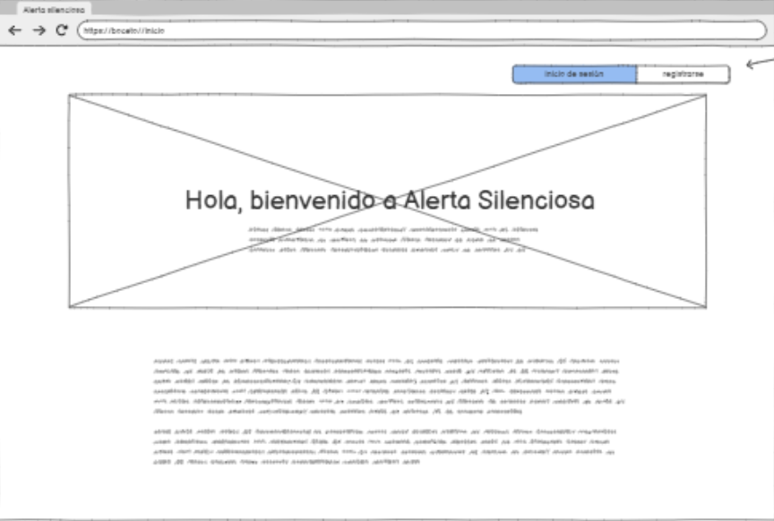

Inicio
- Establecimiento: Liceo Vate Vicente Huidobro
- Asignatura: Desarollo de Proyectos Tecnológicos
- Curso: 3° Medio C
- Docente: Dany Hernandez
Introducción
En este proyecto vamos a ayudar a los alumnos a poder comunicar y reportar a los docentes sus problemas que tengan a lo largo de su año escolar, evitando la tensión y desconfianza que hay con el contacto directo.
Un 46% de los adolescentes de Chile señalan que usan las redes sociales para conocer gente, debido a esto, hay más seguridad y confianza hablando en línea que hablando cara a cara.
Este proyecto se víncula con el ODS Número 4: Educación de calidad, ya que experimentar violencia, problemas y acoso en el ambiente escolar afecta de manera directa al desempeño y ritmo de aprendizaje.
Identificación de la problemática y ODS
Problemática: Violencia escolar.
ODS relacionado: ODS 4 - Educación de calidad
En Chile, entre el 15% y 25% de los estudiantes son víctimas de acoso escolar, la Región Metropolitana concentra más del 35% de los casos a nivel nacional.
Muchos niños no se atreven a denunciar por miedo o vergüenza, ya que faltan espacios confidenciales, rápidos y empáticos para pedir ayuda o expresar lo que viven
Nuestro propósito es crear una aplicación que permita a los niños, niñas y adolescentes que sufren bullying o acoso escolar denunciar de forma segura y sin sentirse en peligro por amenazas, con el fin de recibir ayuda oportuna y puntual del equipo de convivencia escolar y los docentes del establecimiento.
Propuesta de solución tecnológica
Nuestro proyecto consiste en crear una plataforma a través de la cual los estudiantes puedan hacer denuncias seguras en caso de sufrir algún tipo de violencia escolar
Nuestra plataforma es confidencial, solo convivencia escolar y los docentes del establecimiento tendrán acceso a las denuncias, está diseñada para que los estudiantes puedan avisar sin miedo ni desconfianza
También para que el equipo de convivencia escolar pueda realizar intervenciones rápidas y seguras sin necesidad de ir presencialmente a los equipos directivos.
También, queremos implementar un chat con inteligencia artificial que brinde apoyo continuo al estudiante, permitiéndole acceder a asistencia en cualquier momento que lo requiera. Aunque es más recomendable hablar con los docentes.
Tecnologías involucradas
Hardware
- Computador
- Tablet
Software
-
Lenguajes de programación
- HTML: Para la estructura de la plataforma.
- CSS: Para el diseño y decoración.
- JavaScript: Para la interactividad, como validar formularios y dar sugerencias al escribir reportes.
- Python: Para procesar reportes y gestionar el acceso del personal.
-
Bases de datos
MySQL/FireBase: Para almacenar de forma segura los reportes anónimos. Así solo el personal autorizado podrá acceder a ellos.
Mockup de la plataforma
- Opciones de acceso: "Inicio de sesión" para usuarios existentes y "Registrarse" para crear una nueva cuenta.
- Información introductoria:
- Detalled del servicio:
- Página de inicio de sesión: La función principal de esta página es que los estudiantes o profesores puedan acceder.
- Selección de rol: El usuario debe elegir si iniciará sesión como estudiante o docente, y se le enviará una autenticación por gmail y comeduc.
- Importante: El botón "Profesor" se le cambiará por "Docente" y la etiqueta "Apodo" se cambiará por "Nombre".

- Navegación principal: La página muestra "Alerta Silenciosa" con una barra de navegación: "Inicio", "Ayuda" y "Denunciar", lo que representan las funciones principales del sitio.
- Barra izquierda: Hay un panel personal incluye un ícono de perfil y dos secciones: una para gestionar los reportes del usuario y otra para interactuar con los docentes mediante un chat.

- Formulario de Denuncia: La función principal de esta página es ofrecer un formulario para que el usuario pueda enviar una denuncia/reporte detallado.
- Campos de información: El formulario requiere que el usuario especifique su curso, y la fecha del incidente. Se aclara que la información del curso será visible solo para los directivos.
- Detalle del incidente: El usuario dispone de una caja de texto para redactar a detalle la denuncia, con una indicación explícita de no usar lenguaje ofensivo ni de bromas.
- Envío: El botón "Enviar" permite al usuario someter la denuncia una vez que ha completado todos los campos.
- Panel lateral plegable: El panel de usuario, que contiene el perfil y las herramientas, está contraído a la izquierda, indicando que se puede expandir para acceder a sus funciones.
- Módulos de información: La pantalla principal se compone de varios módulos que presentan distintos tipos de contenido, como actualizaciones del sistema, noticias o alertas, organizados en bloques de texto separados por íconos.
Roles del equipo
- Líderes: Krishna Lopez, Yulieth Gonzalez
- Investigadores: Alexander Pino, Yulieth Gonzalez
- Diseño: Javiera Zapata
- Programador principal: Donovan Sáez
- Relator/Editor principal: Ignacio Peña
- Revisor de documentos/presentaciones: Donovan Sáez